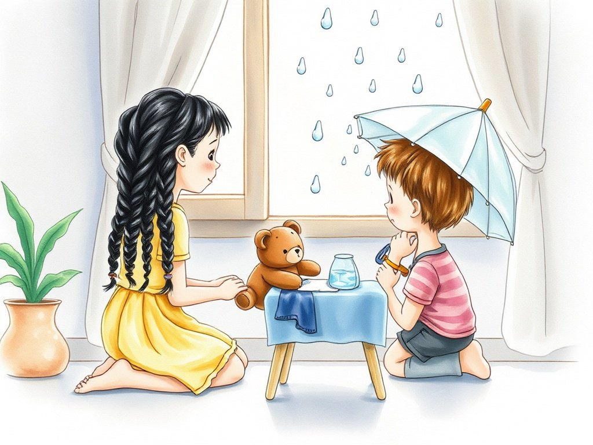

Grade 2 · Science · 2-PS1-1 · 2-PS1-2
An umbrella for Canela
A story about choosing the best material.
Science words you will learn
Tap a green word to see what it means.
The story
Israel is Lucía's friend. He has a teddy bear named Canela. One rainy day, Israel said, "I want to take Canela to the park, but she will get wet."
Lucía had an idea. "Let's make her an umbrella! First, we need to choose the best ." A material is what things are made of, like paper, cloth, or plastic.
The children gathered three materials: a sheet of paper, a piece of towel, and a plastic bag. They looked at them carefully to learn their . A property is something we can see or feel, like color, shape, or .
The towel had a soft texture. The paper was smooth. The plastic was smooth and shiny. All three were , because they could bend without breaking.
Then they did a test. They put a few drops of water on each material. The paper and the towel got completely wet, because they both water. The wet paper also tore.
Something different happened with the plastic. The drops rolled off and did not go through. Plastic is : it does not let water pass.
"Plastic is the best material for an umbrella!" said Israel. Lucía and Israel cut a piece of the bag, taped it to a little stick, and made an umbrella for Canela.
That afternoon, Canela walked in the park without getting wet. The children learned that each material has different properties, and that we must choose it for what we want to do.
Glossary
- material
- What things are made of. Paper, cloth, plastic, and wood are materials.
- property
- Something about a material that we can observe, like its color, shape, texture, or whether it is hard or soft.
- texture
- How something feels when you touch it: soft, rough, smooth, or bumpy.
- flexible
- Able to bend without breaking.
- absorb
- To take in a liquid and hold it inside, like a sponge does with water.
- waterproof
- Not letting water pass through.
Questions
Choose the correct answer. If you make a mistake, the story shows you where the answer is.
-
Question A. What is a material?
A material is what things are made of, like paper, cloth, or plastic.
-
Question B. What texture did the towel have?
The story says the towel had a soft texture.
-
Question C. What happened to the paper and the towel in the water test?
The paper and the towel got completely wet, because they both absorb water.
-
Question D. Why is plastic good for making an umbrella?
Plastic is waterproof: it does not let water pass, and that is what an umbrella needs.